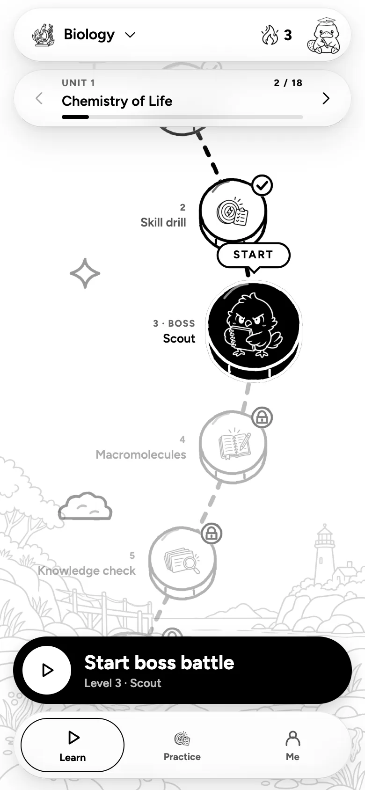
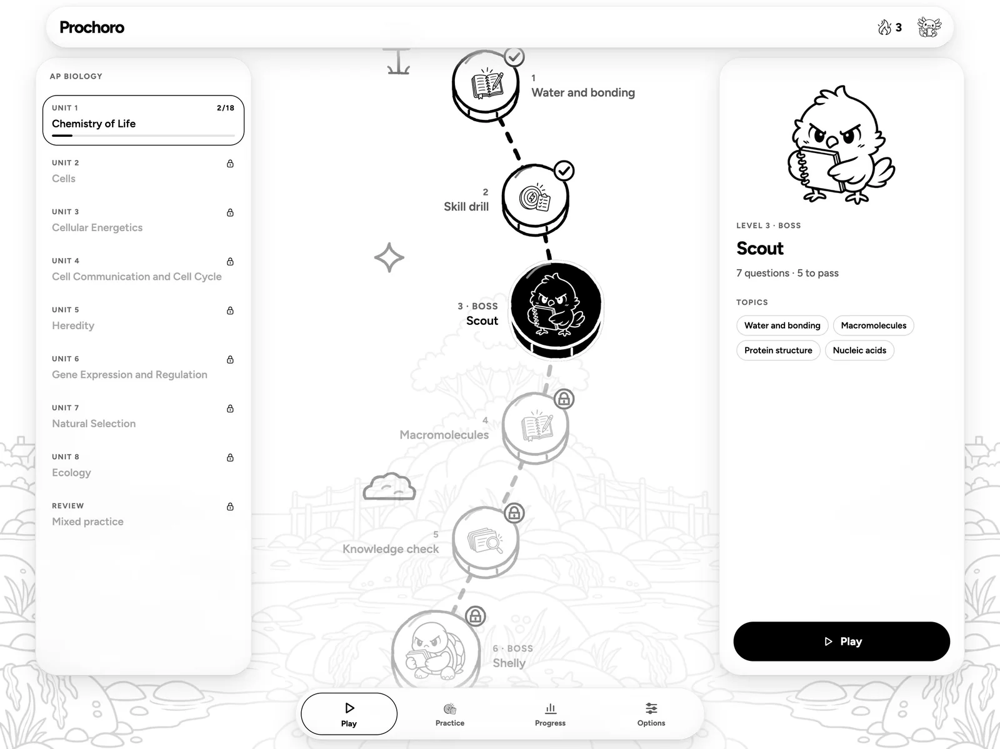

Follow the path.
Each unit is a trail of stepping stones. Tap the next one, read a worked example, and answer a short set of questions.
A STUDY ROUTINE YOU CAN KEEP
Every AP unit becomes a path of short levels. Play the next stone, learn from each explanation, and beat the boss at the end.
Free. No ads. On the web now; the iPhone and iPad app is in testing.

ONE PATH, EVERY SCREEN
On an iPad or a computer, every unit, the trail and your next level sit side by side. Your progress follows your account from one screen to the next.

PICK YOUR PATH
Ten courses, each following its official AP unit outline, with its own path, places and rivals.
A CLEAR WAY FORWARD
Short sessions, useful explanations, and a path that remembers what needs another look.
Each unit is a trail of stepping stones. Tap the next one, read a worked example, and answer a short set of questions.
Endless practice is a card battle. Recruit rivals, pick your stat when you answer right, and climb tower after tower.
Every unit ends in a timed duel. Fast right answers hit harder; pass the set to land the final strike.
A BOSS FOR EVERY AP UNIT
Every AP unit ends with a boss, with smaller battles along the way. Correct answers land hits; misses trigger counterattacks. Complete the set and earn your final strike.
The shore is only the beginning: ten themed groups bring 60 unique boss designs to each course path.
TEN PLACES TO GROW
Original doodle worlds follow your study path, from the first tide pool to the final summit. Their outlines adapt to light and dark.
HATS
Every lesson counts toward a hat for your platypus: a grad cap after your first lesson, a wizard hat for a week-long streak. Nothing to buy, nothing to manage.
READY WHEN YOU ARE
Sign in with Google, Microsoft, or email to save progress across devices.